The first part of this project involves defining correspondences, or pairs of corresponding points that
relate two images. These points must be consistent labels between eyes, noses and other notable features and
are selected with this tool. Then,
Delaunay triangulation is performed on the mid-way shape. The respective triangulation of the two selected
faces (me and Victoria DeAngelis) is shown below.
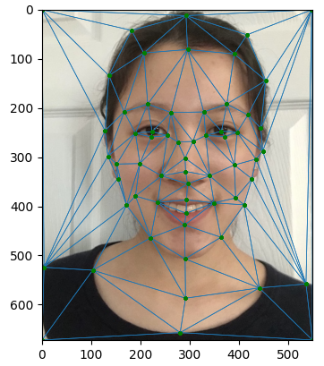
Me Triangulation
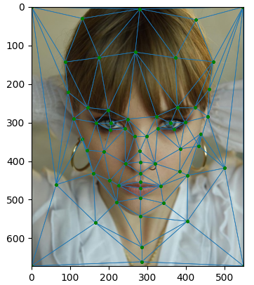
Vic Triangulation
Part 2: Computing the "Mid-way Face"
To compute the mid-way face between me and Vic, (1) the average shape is computed, (2) both faces are warped
into that shape and (3) the colors are averaged. Inverse warping is implemented with an affine warp for each
triangle in the triangulation above. The colors of the mid-way image are then interpolated and averaged.
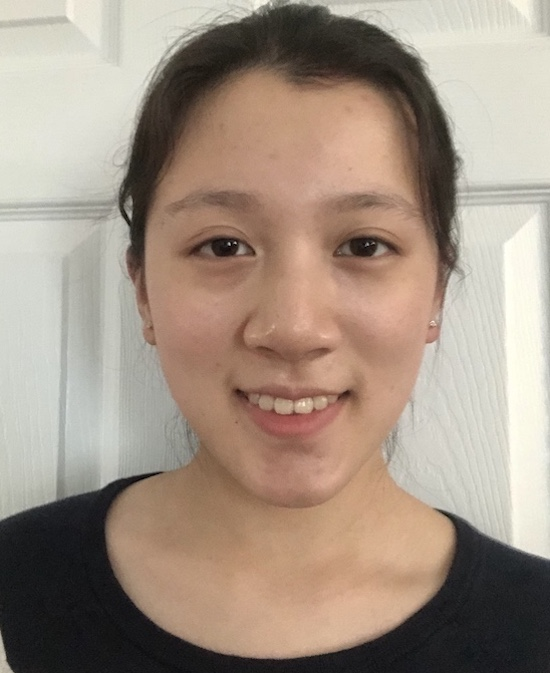
Me
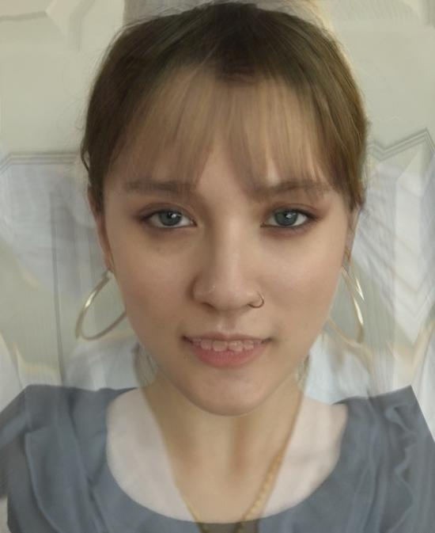
Mid-way
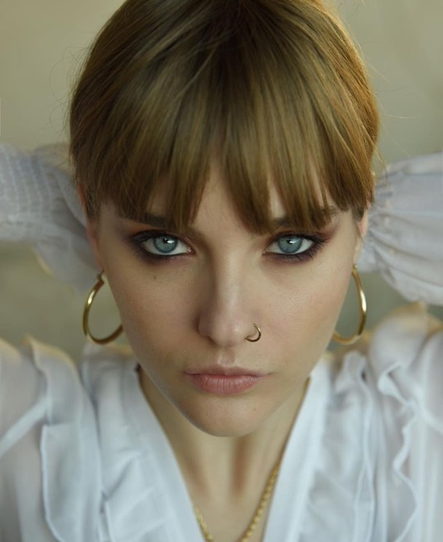
Vic
Part 3: The Morph Sequence
Next, the function morph(im1, im2, im1_pts, im2_pts, tri, warp_frac, dissolve_frac) is created
to perform a warp between im1 (me) and im2 (Vic). The video sequence of a morph
from my face to Vic's face is shown in the following gif, which has 45 1/30-second frames.
Part 4: The "Mean Face" of a Population
The FEI Face Database has a collection of frontal
images of 200 individuals with a smiling facial expression. First, the average face shape of this
population is computed. Then, faces in the dataset are morphed into the average shape. Some examples:
1b...
Warped
5b...
Warped
130b...
Warped
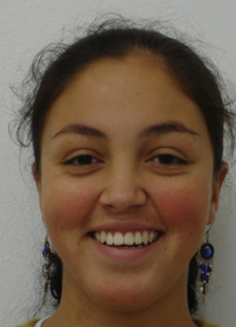
199b...
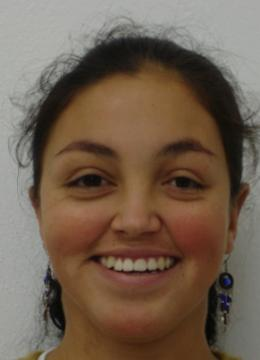
Warped
Next, the average face of the population (the average of all warped faces) is computed:
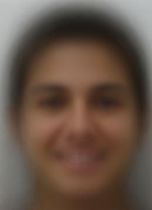
On the left, my face is warped into the average geometry. On the right, the average face is warped into my
geometry:
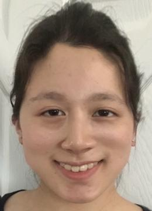
Me to Avg
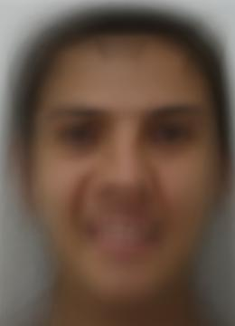
Avg to Me
Part 5: Caricatures: Extrapolating from the Mean
The average smiling face above can also be used to generate caricatures. In the left image,
warp_frac is set to -0.5, exaggerating my geometry. In the
right image, it is set to 1.5, exaggerating the average geometry.
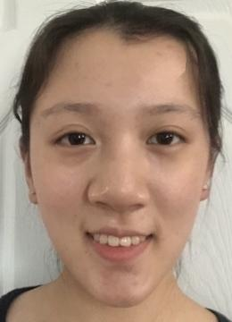
dissolve_frac=-0.5
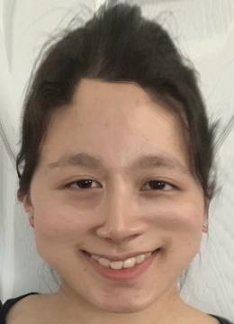
dissolve_frac=1.5
Bells and Whistles
The Bells and Whistles chosen is changing the gender of my face. This is done by morphing my face with
the
average Chinese male face.